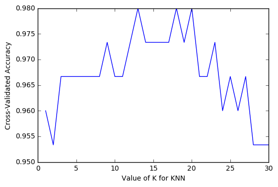
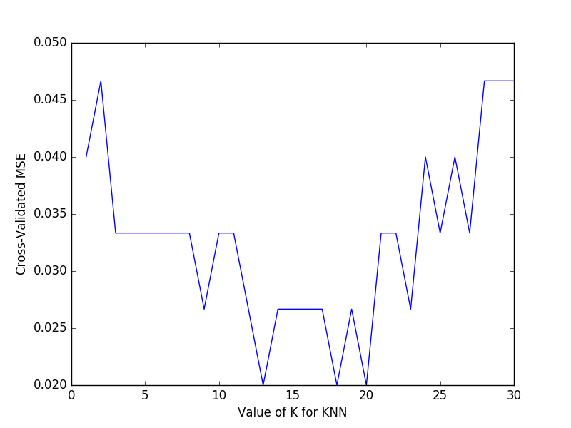

交叉验证 1 Cross-validation
作者: Bhan 编辑: 莫烦 2016-11-03
学习资料:
Sklearn 中的 Cross Validation (交叉验证)对于我们选择正确的 Model 和 Model 的参数是非常有帮助的， 有了他的帮助，我们能直观的看出不同 Model 或者参数对结构准确度的影响。
Model 基础验证法
from sklearn.datasets import load_iris # iris数据集
from sklearn.model_selection import train_test_split # 分割数据模块
from sklearn.neighbors import KNeighborsClassifier # K最近邻(kNN，k-NearestNeighbor)分类算法
#加载iris数据集
iris = load_iris()
X = iris.data
y = iris.target
#分割数据并
X_train, X_test, y_train, y_test = train_test_split(X, y, random_state=4)
#建立模型
knn = KNeighborsClassifier()
#训练模型
knn.fit(X_train, y_train)
#将准确率打印出
print(knn.score(X_test, y_test))
# 0.973684210526
可以看到基础验证的准确率为0.973684210526
Model 交叉验证法(Cross Validation)
from sklearn.cross_validation import cross_val_score # K折交叉验证模块
#使用K折交叉验证模块
scores = cross_val_score(knn, X, y, cv=5, scoring='accuracy')
#将5次的预测准确率打印出
print(scores)
# [ 0.96666667 1. 0.93333333 0.96666667 1. ]
#将5次的预测准确平均率打印出
print(scores.mean())
# 0.973333333333
可以看到交叉验证的准确平均率为0.973333333333
以准确率(accuracy)判断
一般来说准确率(accuracy)会用于判断分类(Classification)模型的好坏。
import matplotlib.pyplot as plt #可视化模块
#建立测试参数集
k_range = range(1, 31)
k_scores = []
#藉由迭代的方式来计算不同参数对模型的影响，并返回交叉验证后的平均准确率
for k in k_range:
knn = KNeighborsClassifier(n_neighbors=k)
scores = cross_val_score(knn, X, y, cv=10, scoring='accuracy')
k_scores.append(scores.mean())
#可视化数据
plt.plot(k_range, k_scores)
plt.xlabel('Value of K for KNN')
plt.ylabel('Cross-Validated Accuracy')
plt.show()

从图中可以得知，选择12~18的k值最好。高过18之后，准确率开始下降则是因为过拟合(Over fitting)的问题。
以平均方差(Mean squared error)
一般来说平均方差(Mean squared error)会用于判断回归(Regression)模型的好坏。
import matplotlib.pyplot as plt
k_range = range(1, 31)
k_scores = []
for k in k_range:
knn = KNeighborsClassifier(n_neighbors=k)
loss = -cross_val_score(knn, X, y, cv=10, scoring='mean_squared_error')
k_scores.append(loss.mean())
plt.plot(k_range, k_scores)
plt.xlabel('Value of K for KNN')
plt.ylabel('Cross-Validated MSE')
plt.show()

由图可以得知，平均方差越低越好，因此选择13~18左右的K值会最好。
如果你觉得这篇文章或视频对你的学习很有帮助, 请你也分享它, 让它能再次帮助到更多的需要学习的人. 莫烦没有正式的经济来源, 如果你也想支持 莫烦Python 并看到更好的教学内容, 赞助他一点点, 作为鼓励他继续开源的动力.